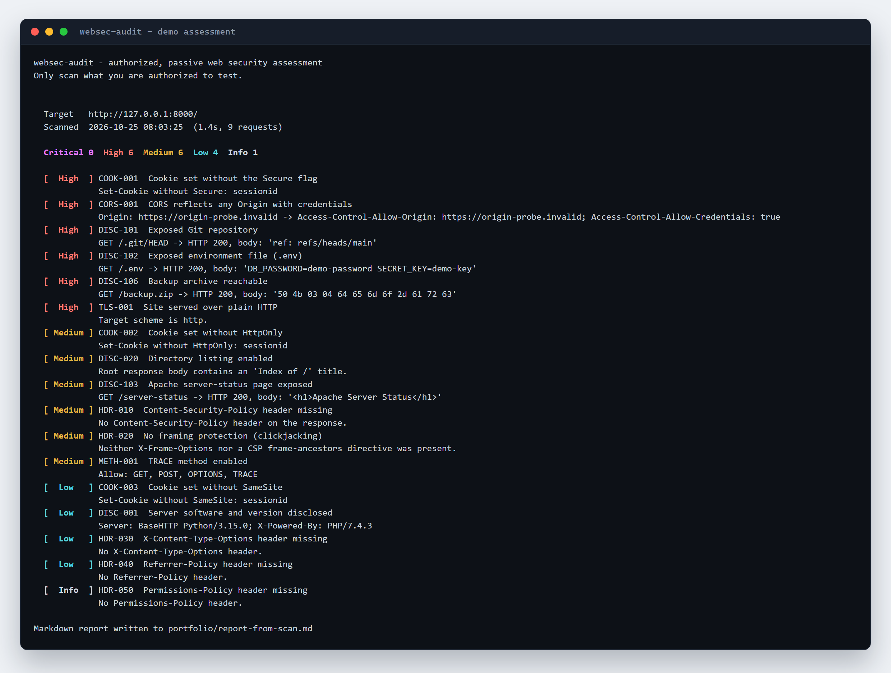
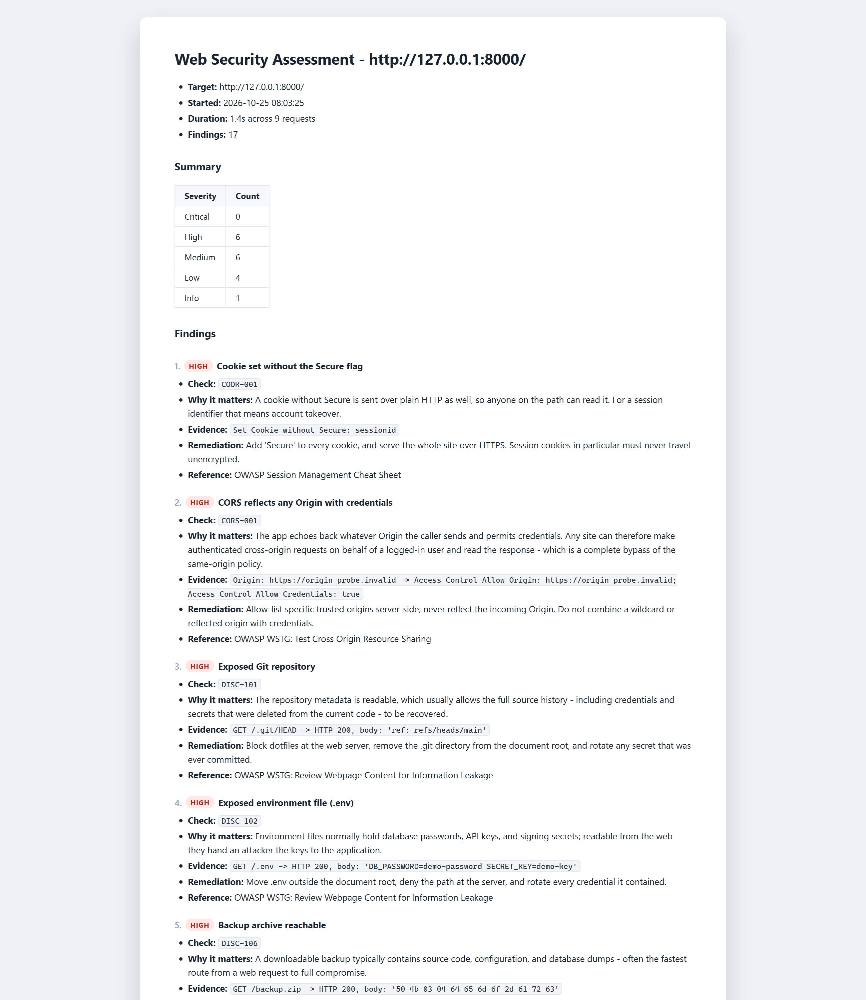
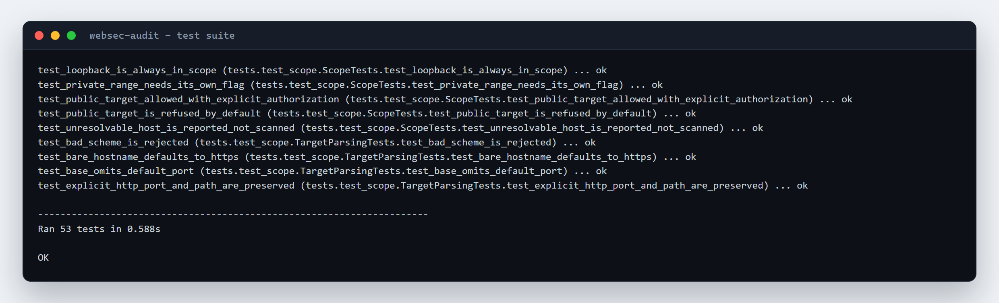

Finds the usual mistakes
Missing CSP and HSTS, session cookies without Secure or HttpOnly, obsolete
TLS, .git and .env left in the web root, TRACE enabled, CORS that trusts any origin.
Security tooling · Python
A web security scanner that refuses to run out of scope — and writes the report a tester actually hands over.
Missing CSP and HSTS, session cookies without Secure or HttpOnly, obsolete
TLS, .git and .env left in the web root, TRACE enabled, CORS that trusts any origin.
Resolves the hostname and refuses anything out of scope before the first request. Loopback by
default; --allow-private for labs, --authorize for hosts you have written permission to test.
Severity-ranked findings with quoted evidence, why it matters, and the fix. Markdown and JSON out, plus an exit code that works as a CI gate.

.env finding shows the line it read.

urllib, ssl, socket. Nothing to install, which means it runs on any
machine that has Python — including a locked-down work laptop.
Each check takes a context and returns findings. Adding one is a single function, and every one is testable without mocking a network stack.
The guard resolves the target and runs before the session is created, so a hostname pointing at a public address is refused even if it looks local.
Passive only, one URL per run, no authenticated scanning, and severity is a judgement baked into each check rather than a CVSS score.